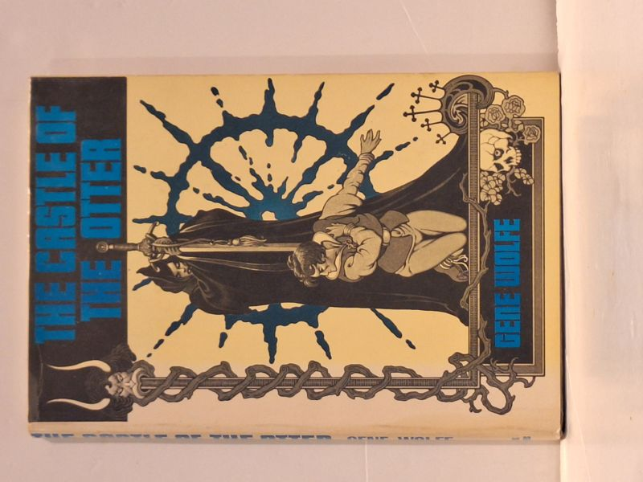

The Castle of the Otter
Gene Wolfe · Ziesing Brothers, Willimantic, Connecticut, 1982

C$95 · Very Good condition
Ziesing Brothers, Willimantic, Connecticut, 1982. Book Club Edition (BCE designation appears on the inside flap of the dust jacket). Gene Wolfe's companion volume to The Book of the New Sun, collecting essays on the writing of the tetralogy. Jacket illustration by Stephen Fabian; bibliography by Gordon Benson Jr. Hardcover with original unclipped pictorial dust jacket. Binding tight, boards clean, text block clean with no foxing or prior-owner marks. Dust jacket shows light edge wear.
Details
- Publisher: Ziesing Brothers, Willimantic, Connecticut, 1982
- Binding: Hardcover
- Edition: Book Club Edition
- Condition: Very Good
- Dust jacket: Very Good
- Category: Science Fiction